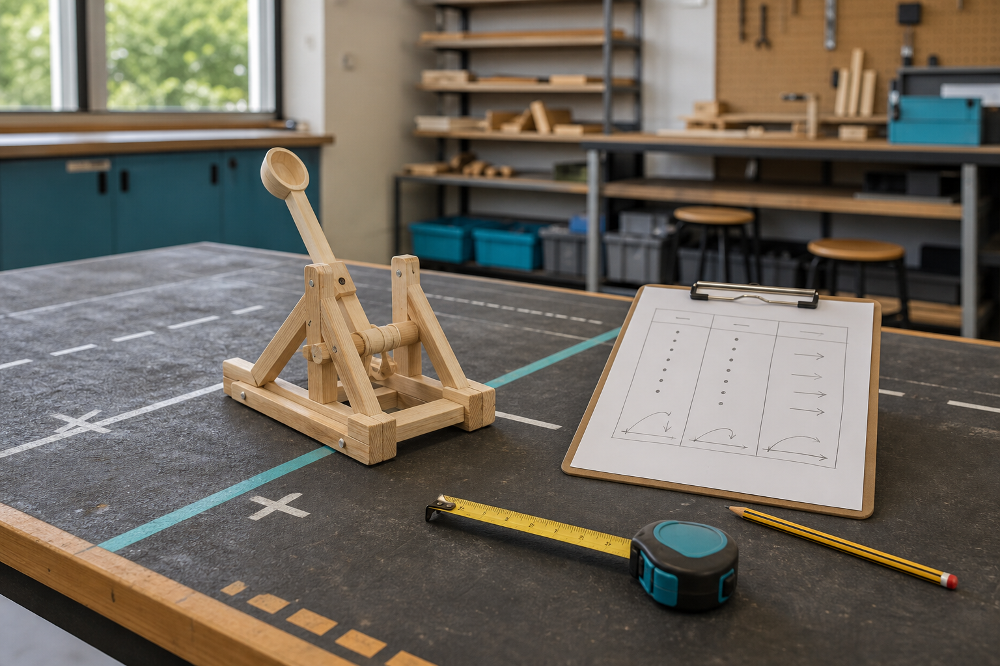
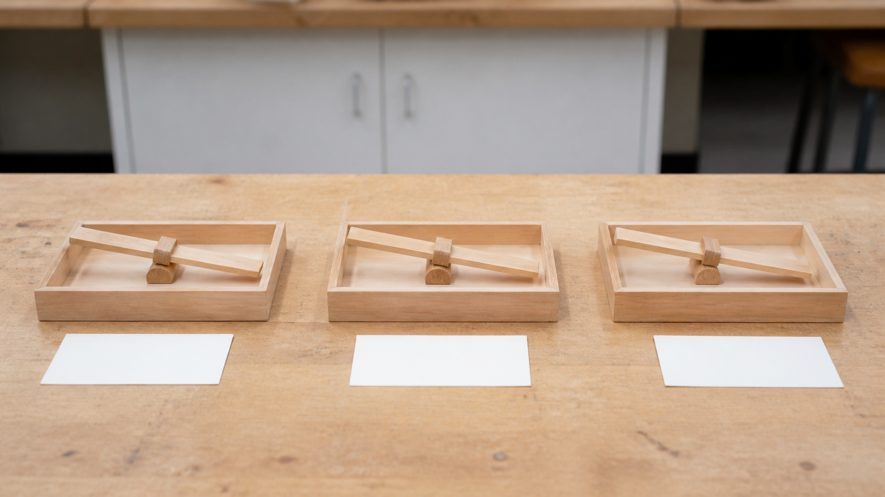
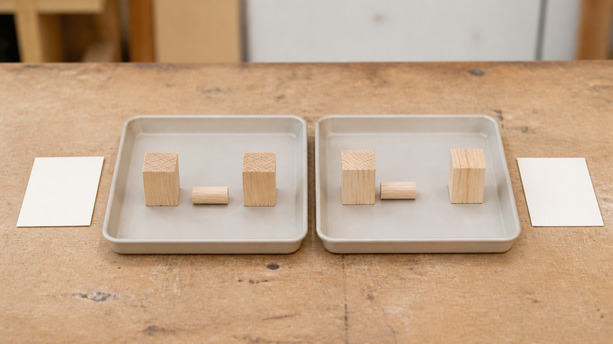

The single best result proves the design is best.
One result may be unusual; repeated data, spread and observations provide stronger evidence.
Module 8 of 10
Testing is an organised way to reduce uncertainty. A useful test begins with a question, follows teacher-set conditions, records suitable measures and repeats observations. Redesign then uses the pattern in the evidence, rather than the most exciting single result, to justify one controlled change.
Use this page to learn and prepare. Follow your teacher's demonstration, approved tools, local safety controls and testing instructions for every practical action.

Theory 1 of 3
A testable question identifies the feature being investigated and the evidence needed to answer it. Under teacher-controlled conditions, relevant measures might include distance, accuracy, consistency or stability. These measures are not interchangeable. Distance describes how far; accuracy describes closeness to an agreed target; consistency describes how tightly repeated results group; and stability describes whether the supporting system remains controlled.
The independent variable is the one feature deliberately changed. Dependent data are the observations or measurements that may respond. Controlled variables are important conditions kept consistent so the comparison remains meaningful. The teacher sets the projectile, test area, launch procedure and other safety controls. Your role is to understand the investigation and record it accurately, not invent missing test conditions.
Multiple-choice knowledge check
Choose an answer, check the feedback and try again if needed. Your checked progress is saved on this device.
0 of 4 questions checkedSaved on this device
Longer response
Draft a testable question for one teacher-confirmed Catapult feature and one agreed measure. Explain the independent variable, dependent data and controlled variables, then state which physical testing details remain set by the teacher.
Use the scaffold to explain and justify your thinking. No drawing is required. Your writing autosaves in this browser.
Formative learning evidence — not proof of submission.
Theory 2 of 3
A single result can be affected by variation, measurement error or an unusual event. Repeated trials show whether a pattern is dependable. Record every valid result with a heading and unit, and note any anomaly rather than deleting it because it looks inconvenient. An anomaly is a result that differs noticeably from the rest and may deserve investigation.
The mean is found by adding the results and dividing by the number of results. It gives one value that represents the data set. The range is the largest result minus the smallest and shows how spread out the results are. A design can have a high mean but a large range, which suggests strong average performance but poor consistency. Engineers therefore read more than one number before judging quality.

Multiple-choice knowledge check
Choose an answer, check the feedback and try again if needed. Your checked progress is saved on this device.
0 of 4 questions checkedSaved on this device
Longer response
Use a teacher-provided or clearly labelled practice dataset of repeated results. Calculate or identify the mean and range, describe the pattern and any possible anomaly, then explain how confident you should be in one conclusion.
Use the scaffold to explain and justify your thinking. No drawing is required. Your writing autosaves in this browser.
Formative learning evidence — not proof of submission.
Theory 3 of 3
Claim-evidence-reasoning turns results into an explanation. The claim answers the test question. The evidence names the relevant pattern, values or observations. The reasoning explains why that evidence supports the claim using engineering ideas such as stability, alignment, friction, energy transfer or variation. A claim without evidence is an opinion; data without reasoning are just numbers.
Controlled redesign changes one feature, predicts the effect and retests under the same teacher-set conditions. Comparing before-and-after evidence shows whether the change helped the selected measure and whether it created another trade-off. A redesign does not have to improve every possible output. It should address a clear need and be judged against the evidence that matters for that decision.

Multiple-choice knowledge check
Choose an answer, check the feedback and try again if needed. Your checked progress is saved on this device.
0 of 4 questions checkedSaved on this device
Longer response
Use before-and-after evidence from one teacher-approved redesign or a supplied scenario. Write a claim–evidence–reasoning explanation, judge any trade-off, and recommend whether the change should be kept, reversed or retested.
Use the scaffold to explain and justify your thinking. No drawing is required. Your writing autosaves in this browser.
Formative learning evidence — not proof of submission.
Worked example
Vocabulary
Common traps
One result may be unusual; repeated data, spread and observations provide stronger evidence.
Multiple changes hide cause and effect, making the result difficult to explain or repeat.
Video learning · 5:17
Crash Course Kids
Watch for: Which questions turn test evidence into one justified redesign?
Source boundary: Iteration and evidence only; no local test authorisation.

Use the data-to-redesign cycle and an accessible repeated-trial table. Testing rules, projectile and range still come from the teacher.
The privacy-enhanced player loads only when you choose it.
Applied Learning Activity
Practise reading repeated results and turning them into a cautious redesign decision.
Evidence to save: Calculations, pattern note and CER redesign decision, saved as formative practice.
Type the response, reasoning or record requested above. It autosaves in this browser.
Use: ‘I claim ___. The evidence is ___. This supports the claim because ___.’
Explain when median might be useful if one result is unusually high or low.
Higher-order evidence
Two teacher-controlled test sets are available: one before a design change and one after it. Decide whether the change should be kept, reversed or retested.
Type your response. No drawing is required. It autosaves in this browser.